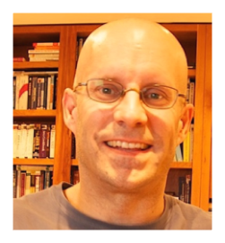

Randy Horman

21 Northern Dancer Blvd, Toronto, ON
M4L 3Z8
rwhorman@gmail.com
647-292-1300
Education
1994–1995
M.Math
, Computer Science
(GPA: A+)
University of Waterloo, Waterloo, Ontario, Canada
Scalable, fault-tolerant systems, s/w architecture, algorithm design
NSERC, ICR, UGO
1989–1994
B.A.
, Joint Honours in Computer Science, Math, Econ
(GPA: A+)
University of Waterloo, Waterloo, Ontario, Canada
1990–1994 Dean's Honour Roll, Co-operative Education-Work Program
1984–1987
Computer Electronics Engineering Technology
(GPA: 3.3/85%)
Mohawk College, Hamilton, Ontario, Canada
Digital circuit layout design & optimization, software-hardware interfaces, sensor data capture
1985–1987 Co-operative Education-Work Program
Leadership Activities And Awards (5 Years)
2015–present
Architect and lead programmer of the Bluemix Apache Spark cloud service
2016
Patent Portfolio Award of $15,000 USD (
Patent US 6785706
)
2014–2015
Architect and lead programmer of an IBM IoT sensor analytics cloud incubator and service
2015
Outstanding Technical Achievement Award (OTAA), and high-value stock award ($125k)
2013–2014
Architect of the data management solution of the PureSystems analytics appliance family
2013
Outstanding Technical Achievement Award (OTAA)
2012–2014
Lead Architect of the Optim data management tools portfolio
2013
Outstanding Technical Achievement Award (OTAA)
2012
High-value Patent Award (
Patent US 9129000
)